Graj / Wersje
Profile Vanilla, Fabric, Forge, NeoForge i Quilt — zależnie od zgodności z wersją Minecrafta.
Launcher Minecraft Java z funkcjami PvP, Modrinth i studiem skinów 3D. Aktualizacja 18.3.2 dobiera zgodne wydania HUD do profilu gry i chroni przed instalacją niewłaściwego moda.
Prosty dostęp do gry, profili i narzędzi społecznościowych.
Profile Vanilla, Fabric, Forge, NeoForge i Quilt — zależnie od zgodności z wersją Minecrafta.
Wbudowany instalator PvP HUD dla Fabric 1.21.1 oraz edycja ustawień moda w aplikacji.
Nowe natywne ekrany w launcherze, takie same sekcje i motyw jak na stronie WWW.
Przygotowaliśmy ilustrowany poradnik funkcji MINEVORA: wersje gry, mody, skiny 3D, PvP menu, społeczność i narzędzia.
Wspólne ikony, granatowe panele i fioletowe akcenty Enchanted. W launcherze pojawiły się interaktywne zakładki Co nowego i Pomoc. Automatyczna instalacja PvP HUD pozostaje dostępna dla zgodnych profili Fabric 1.21.1.
Ta sama identyfikacja wizualna w programie Windows i w przeglądarce. Wszystkie pokazane funkcje WWW są informacyjne — gra i instalowanie modów odbywają się w launcherze.
Strona główna, pobieranie, funkcje, PvP HUD, aktualności i pomoc.
Fioletowe panele i wspólne ikony; mod nadal wymaga Fabric 1.21.1.
Te same akcenty i karty w Python/Qt i HTML/CSS.
Podgląd postaci korzysta z prawdziwej tekstury Minecraft PNG 64×64. Poprawne mapowanie każdej ściany zachowuje szczegóły stroju także podczas obrotu.
To tylko podgląd postaci — edycja wyglądu pozostaje w aplikacji Windows.
Zaktualizowany projekt Python/PySide6 dla Windows z motywem Enchanted. Wersja 18.3.2 rozpoznaje wersję i loader profilu, a moduł PvP HUD pobiera tylko zgodne pliki z GitHub Releases.
Pobierz launcher ZIP ↗Windows 11 • wymagany Python i zależności Pythona, dostęp do Minecraft Java oraz poprawna instalacja wybranego profilu. Niektóre funkcje wymagają internetu i konta Microsoft.
90943a6b175706ece9989ae562e64b53f6e65e8034dd1301587dfb69200e7cd6
Instalacja profili Vanilla, Fabric, Forge, NeoForge i Quilt, zależnie od zgodności z danym wydaniem.
Obsługa konta Minecraft w aplikacji Windows. Logowanie odbywa się w launcherze, nie na stronie WWW.
Wbudowany JAR 2.0.5 z poprawionymi ikonami i ruchomym oknem. Nowy instalator wyszukuje zgodne kompilacje dla innych wersji, jeśli są dostępne w GitHub Releases.
Wykrywanie i instalacja wymaganych zależności modów z Modrinth dla obsługiwanych loaderów i wersji.
Zarządzanie instancjami, parametrami gry i podglądem skinów w aplikacji Windows.
Wykrywanie wersji profilu, weryfikacja metadanych JAR, kopie zapasowe, ochrona przed niezgodnymi lub starszymi wydaniami.
W modzie 2.0.5 poprawiono ikony oraz możliwość przeciągania głównego okna. Launcher 18.3.2 potrafi wybrać i pobrać odpowiednią wersję moda, jeśli została opublikowana w GitHub Releases.
Wszystko bez ręcznego kopiowania pliku moda do folderu mods.
W launcherze utwórz lub wybierz profil Minecraft Java z Fabric i wymaganymi zależnościami.
W zakładce „PvP Mod Menu” wybierz przycisk pobierania i instalacji HUD-u.
Po poprawnej instalacji uruchom profil Fabric 1.21.1, wejdź na świat i otwórz HUD.
Dobiera plik według Minecrafta i loadera. Nie instaluje niewłaściwego moda tylko po to, aby włączyć funkcję.
Launcher rozpoznaje wersję gry i loader oraz szuka odpowiedniego JAR w GitHub Releases. Dołączony PvP HUD 2.0.5 obsługuje Fabric 1.21.1; inne wydania wymagają osobnych kompilacji. Mod 2.0.5 ma poprawione ikony i przesuwane okno. Ochrona zapobiega instalacji niezgodnych plików.
Wspólna paleta Enchanted, rzeczywiste współdzielone pliki ikon, interaktywny ekran Co nowego, nowe FAQ w aplikacji, odświeżony dashboard i pełna paczka launchera do pobrania ze strony. Zachowane funkcje 18.2.
W wydaniu 18.2 pojawiły się podstrony PvP HUD i Co nowego oraz nowa instrukcja instalacji.
Obsługa publicznych wydań PvP HUD, lokalny JAR zapasowy 2.0.2, weryfikacja pliku i kopie przed podmianą. Funkcja dotyczy zgodnych profili Fabric 1.21.1.
Wybór Vanilla, Fabric, Forge, NeoForge lub Quilt i automatyczne pobieranie brakujących składników dla obsługiwanych wersji.
Poprawki zarządzania profilami, obsługi zależności, podglądu skinów oraz integracji społecznościowych. Zaawansowana edycja pozostaje w aplikacji Windows.
MINEVORA 18.3.2 wykrywa wersję Minecrafta i loader, a następnie instaluje wyłącznie zgodną wersję PvP HUD. Dla innych profili Fabric plik musi najpierw zostać opublikowany w GitHub Releases. Gotowy JAR 2.0.5 jest dostępny dla Fabric 1.21.1.
Kliknij wybraną pozycję i przejdź do jej opisu.
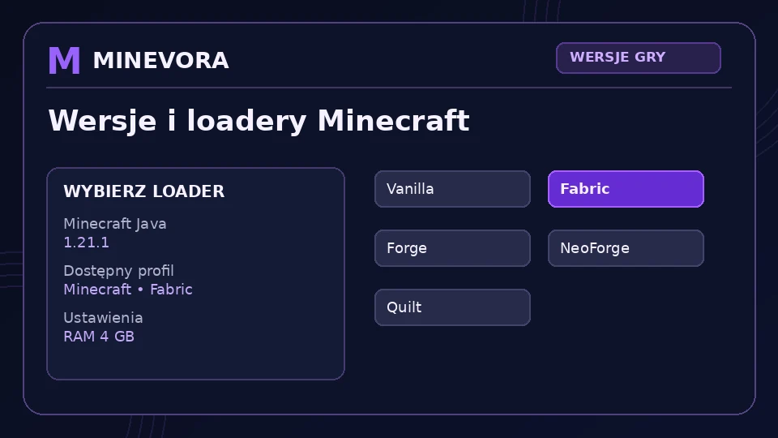
⤢ Powiększ obrazMINEVORA zbiera najważniejsze opcje uruchamiania gry w jednym miejscu. Możesz wybrać wersję Minecrafta, loader i podstawowe ustawienia profilu.
Co oferuje ta funkcja? Jeden punkt startu do wyboru wersji, loadera i przygotowania Minecrafta pod dalsze dodatki.
Dalej: mody i Modrinth →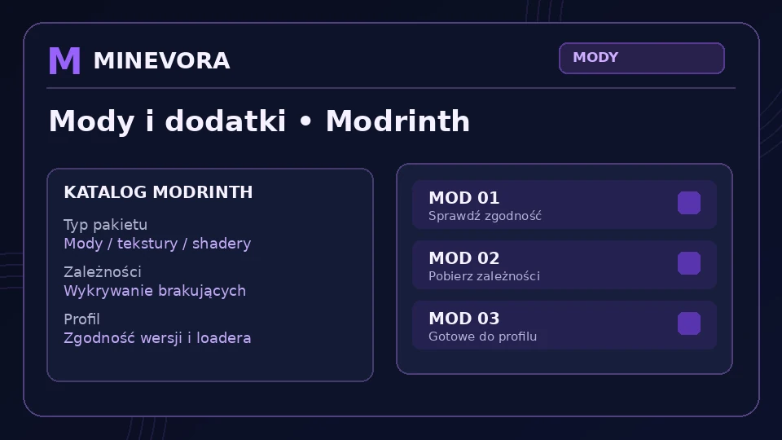
⤢ Powiększ obrazLauncher pomaga zarządzać dodatkami do gry. To wygodne miejsce do przeglądania modów i shaderów oraz dobierania ich do zgodnego loadera.
Ważne: pobieranie dodatków wymaga internetu, a zgodność zależy od wybranego loadera i wersji gry.
Dalej: skiny 3D →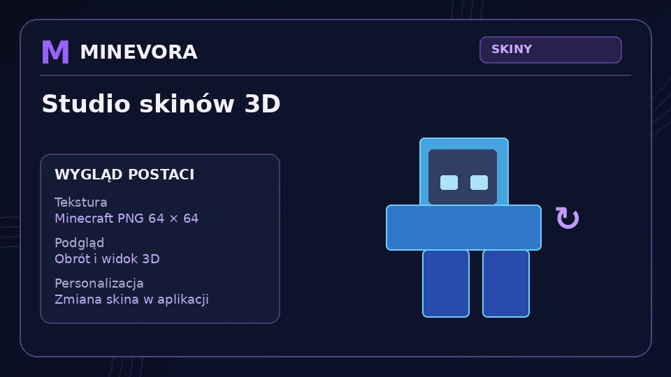
⤢ Powiększ obrazMINEVORA oferuje moduł do pracy ze skinami Minecrafta. Możesz oglądać postać 3D, obracać model i przygotowywać własny wygląd.
Co oferuje? Wygodniejszą pracę nad skinami niż samo edytowanie płaskiego pliku tekstury.
Dalej: PvP menu →To jedna z najbardziej charakterystycznych funkcji launchera. PvP Mod Menu prowadzi do instalacji i konfiguracji moda MINEVORA PvP HUD, w tym panelu Armor HUD, trwałości i układu elementów na ekranie.
W nowym wydaniu okno PvP można przeciągać za logo MINEVORA, a czytelne ikony nie są już zależne od brakujących znaków czcionki Minecraft.
Dalej: marketplace i minigry →Otwórz kompletny przewodnik po PvP Menu →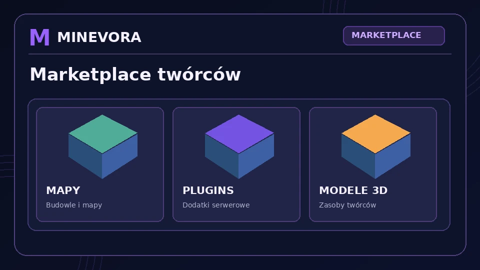
⤢ Powiększ obrazLauncher nie kończy się na samym uruchamianiu gry. Oferuje też przestrzeń na treści społeczności oraz moduły zabawy.
Uwaga: dostępność konkretnych treści zależy od tego, co zostało faktycznie dodane i skonfigurowane w projekcie.
Dalej: społeczność →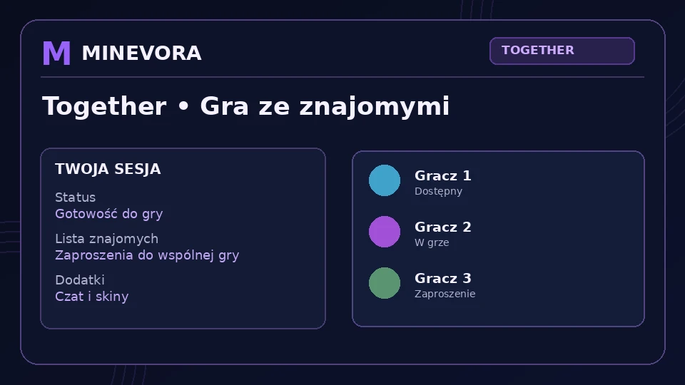
⤢ Powiększ obrazMINEVORA rozwija też stronę społeczną: wspólna gra, rankingi oraz integracje komunikacyjne.
Co daje ta sekcja? Łączy launcher z elementami społecznościowymi, dzięki czemu MINEVORA jest czymś więcej niż tylko przyciskiem „Graj”.
Dalej: narzędzia i pomoc →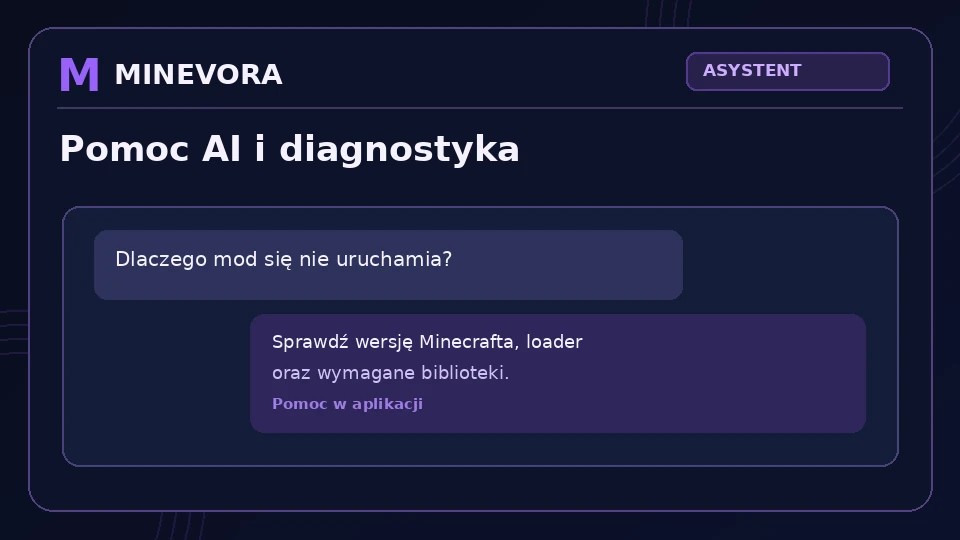
⤢ Powiększ obrazPoza rozgrywką launcher oferuje także narzędzia wspierające bezpieczeństwo danych i wygodę korzystania.
Dlaczego to ważne? Dzięki temu launcher oferuje nie tylko funkcje do grania, ale również utrzymanie porządku, wsparcie i własny spójny styl.
Przejdź do FAQ ↓Krótkie odpowiedzi dotyczące tego, co oferuje MINEVORA i jak działają ważne moduły.
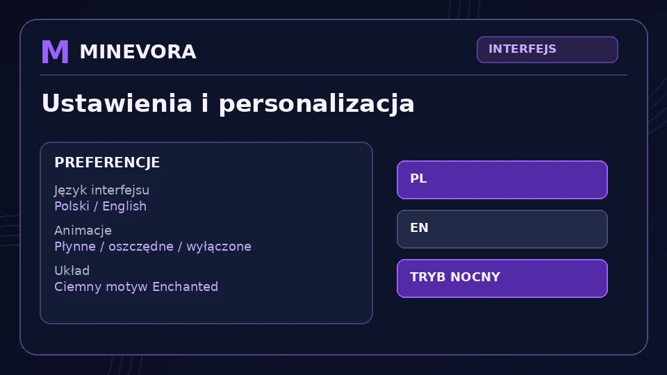
Nie. Oprócz uruchamiania gry oferuje też moduły modów, skiny 3D, PvP menu, PvP HUD, elementy społecznościowe, backup i narzędzia pomocy.
W samym launcherze szukaj sekcji PvP Mod Menu. To z niej przechodzisz do funkcji instalacji i obsługi MINEVORA PvP HUD.
Nie. Aktualnie przygotowana wersja dołączonego PvP HUD jest przeznaczona dla Fabric 1.21.1. Dla innych wersji trzeba przygotować osobne zgodne wydania moda.
Nie wszystkie. Część grafik to czytelne wizualizacje poglądowe, które pokazują układ funkcji i pomagają zrozumieć, co oferuje dana sekcja launchera.
Pobierz paczkę, uruchom INSTALUJ_ZALEZNOSCI.bat jeśli trzeba, następnie URUCHOM_MINEVORA.bat, a potem przejdź do modułu Graj / Wersje lub PvP Mod Menu.
Możesz teraz wrócić do pobierania, zajrzeć do galerii funkcji albo przejść prosto do zakładki PvP HUD.
Otwórz każdy obraz, aby zobaczyć szczegóły układu.
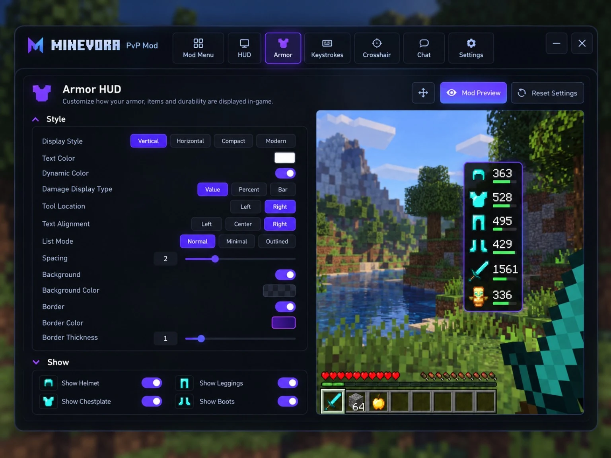
Pełny widok PvP MenuObraz wzorcowy · otwórz w pełnym rozmiarze ↗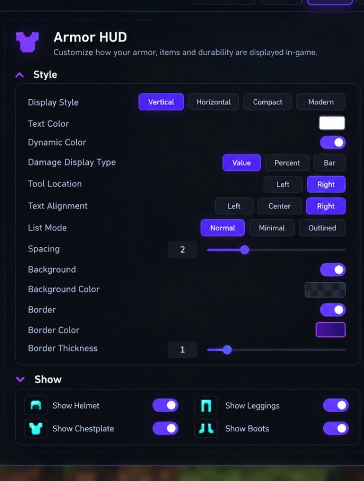
Ustawienia Armor HUDPowiększony fragment wzoru ↗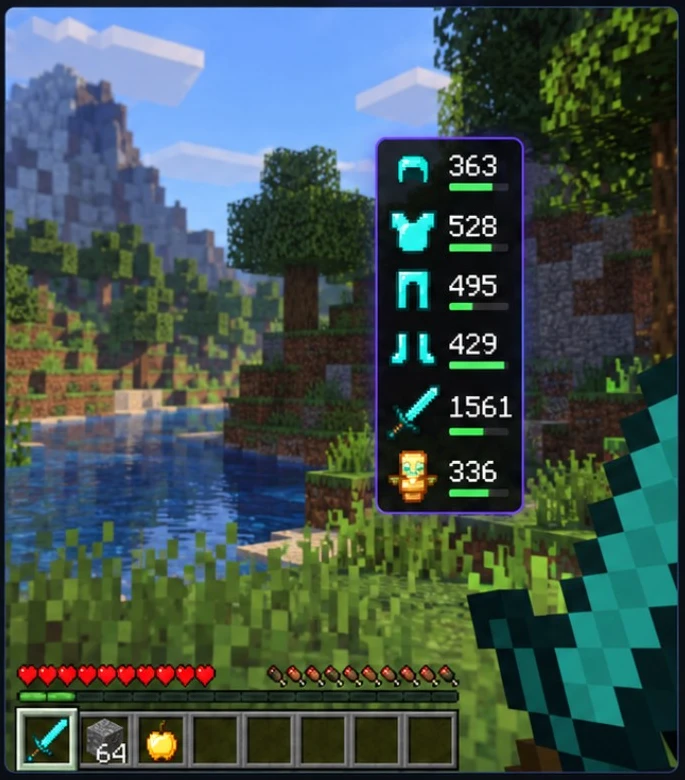
Podgląd trwałościPowiększony fragment wzoru ↗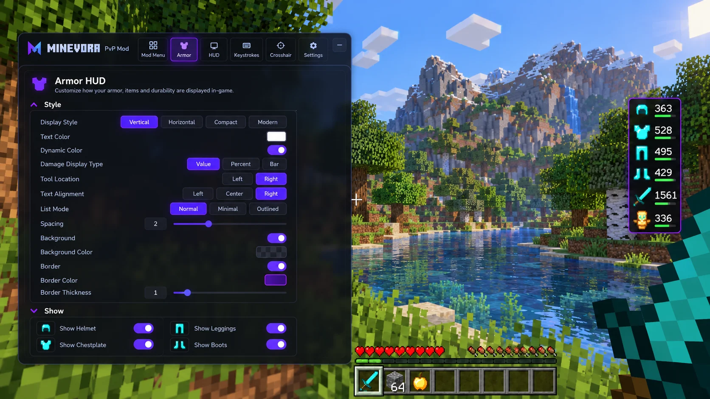
Menu podczas rozgrywkiWizualizacja koncepcyjna ↗Poniżej znajdziesz opis opcji pokazanych na wzorze interfejsu.
Wybieraj pionowy lub poziomy układ elementów, mniejszy widok Compact albo wygląd Modern. To zmienia sposób prezentacji zbroi i przedmiotów na ekranie.
Informacja o wytrzymałości przedmiotów może być pokazywana jako wartość liczbowa, procent lub pasek. Dzięki temu szybko widać, które elementy wymagają naprawy.
Zmiana koloru tekstu oraz dynamiczne kolory stanu przedmiotów pomagają dopasować HUD do Twojego motywu i ułatwiają odczytywanie trwałości.
Ustaw odstępy między ikonami i wyrównanie. W wersji 2.0.5 możesz też przeciągnąć główne okno, chwytając za logo MINEVORA. Pozycję Armor HUD ustawisz w jego podglądzie.
Dodawaj tło za ikonami i ramkę wokół HUD-u, zmieniaj ich kolor oraz grubość, aby całość pasowała do stylu Enchanted.
Włączaj i wyłączaj osobno elementy zbroi widoczne na ekranie. Możesz ograniczyć HUD do części ekwipunku, których najczęściej używasz.
Uruchom MINEVORA i przejdź do zgodnego profilu gry. Inne wydania wymagają osobnej wersji moda.
Mod Launcher pobiera zgodną kompilację z GitHub Releases, a dla Fabric 1.21.1 ma dołączony plik 2.0.5. Nie instaluje JAR do niezgodnego profilu.
Po uruchomieniu profilu sprawdź HUD. W dołączonej wersji moda menu otwiera Prawy Shift lub P; inne buildy mogą mieć odmienne skróty.
W poradniku ogólnym opisujemy również mody, skiny 3D, Marketplace, Together oraz minigry.
Przejdź do „Pobierz launcher”, pobierz ZIP, rozpakuj całą paczkę i uruchom URUCHOM_MINEVORA.bat (wcześniej doinstaluj biblioteki przez INSTALUJ_ZALEZNOSCI.bat, jeśli program tego wymaga).
Nie. Publiczna strona służy do prezentacji projektu i pobierania programu. Zaawansowane funkcje pozostają w aplikacji MINEVORA dla Windows.
Tak. Ta paczka to launcher napisany w Pythonie, a nie gotowy plik EXE. Wymagane są biblioteki wskazane przez pliki instalacyjne projektu.
Tak. Po publikacji GitHub Pages udostępnia stronę z serwerów hostingu niezależnie od Twojego komputera. Dostępność zależy od usługi GitHub Pages.
Mod PvP HUD 2.0.5 został przygotowany dla Fabric 1.21.1. Launcher 18.3.2 rozpoznaje profil i potrafi pobrać inne wydania z GitHub Releases, lecz dopiero gdy zostaną opublikowane zgodne porty. Nie instaluj wersji Fabric do Forge lub NeoForge.
Mod PvP HUD 2.0.5 został przygotowany dla Fabric 1.21.1. Launcher 18.3.2 rozpoznaje profil i potrafi pobrać inne wydania z GitHub Releases, lecz dopiero gdy zostaną opublikowane zgodne porty. Nie instaluj wersji Fabric do Forge lub NeoForge.
Sprawdź, czy uruchamiasz Fabric 1.21.1 z wymaganymi zależnościami (w tym Fabric API), a plik JAR znajduje się w folderze mods właściwego profilu. W dołączonej wersji HUD 2.0.2 spróbuj Prawego Shiftu albo klawisza K.
Nie. To statyczna strona GitHub Pages. Instalowanie modów i uruchamianie gry odbywa się w aplikacji MINEVORA na Windows.